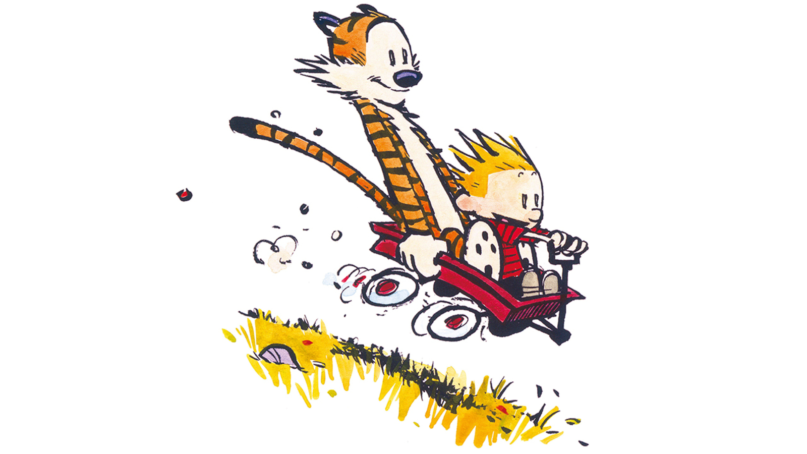

Hobbes the Tiger

This is Hobbes the Tiger, one of the main characters
from the comic strip Calvin and Hobbes.
He is the best friend of Calvin, a six-year-old boy with a wild imagination. To everyone else, Hobbes is simply
a stuffed animal, but to Calvin, Hobbes is a real tiger with thoughts, emotions, and an unsatiable desire for
tuna.
3 Reasons Why I Admire Hobbes
- The character of Hobbes serves as a counter to Calvin's naiveté and often negative perspective on the world.
It is important to see both the good and bad in the world, and I admire Hobbes' mentality and viewpoints.
- Although Hobbes is often wrong about many things (especially when it comes to basic math),
he acts as a
mentor for Calvin and helps him guide through life.
- Hobbes is kind and very loyal to Calvin, and his perspective of "taking the time to cherish the precious
things" is something that reasonates with me.